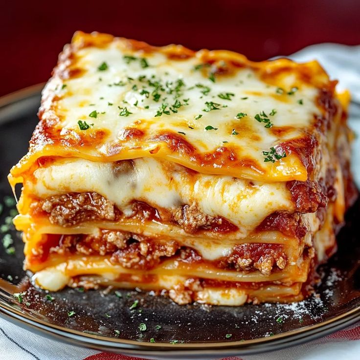

Lasagna

Description
Lasagna is a classic Italian dish made with layers of pasta,
rich meat sauce, creamy béchamel, and melted cheese. It's the perfect comfort food
for family dinners or special occasions
This hearty recipe is baked to perfection with a golden, bubbling top and rich layers underneath.
Whether you're cooking for guests or meal prepping, lasagna is always a crowd-pleaser.
Ingredients
- Lasagna noodles
- Ground beef
- Tomato sauce
- Onion and garlic
- Ricotta cheese
- Mozzarella cheese
- Parmesan cheese
- Olive oil
- Salt and pepper
- Italian herbs (basil, oregano)
Steps
- Preheat your oven to 375°F (190°C).
- Cook the lasagna noodles until al dente, then set aside.
- Sauté onions and garlic in olive oil, add ground beef, and cook until browned.
- Stir in tomato sauce and Italian herbs, and let it simmer.
- In a baking dish, layer noodles, meat sauce, ricotta, and shredded cheese.
- Repeat the layers and finish with a generous layer of mozzarella and parmesan on top.
- Cover with foil and bake for 25 minutes, then uncover and bake for 10–15 more minutes.
- Let it rest for 10 minutes before serving.
Back to Home